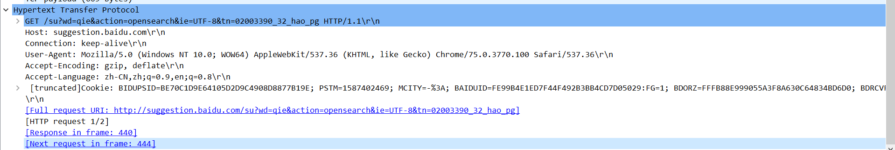
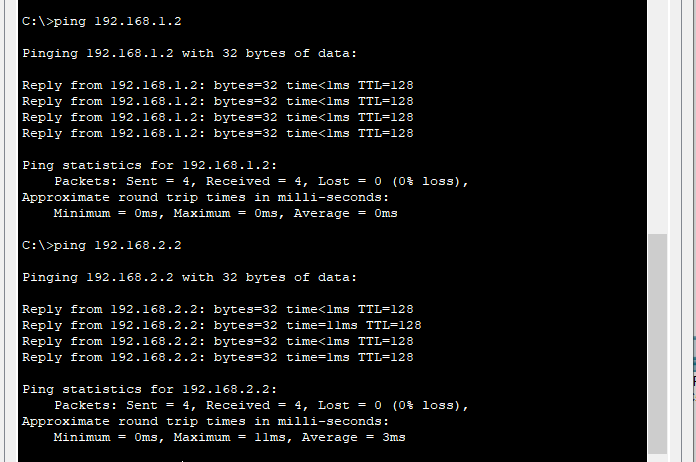
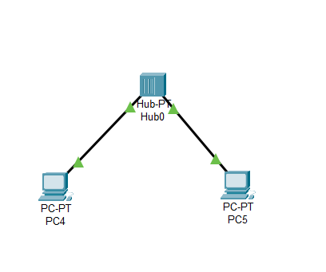
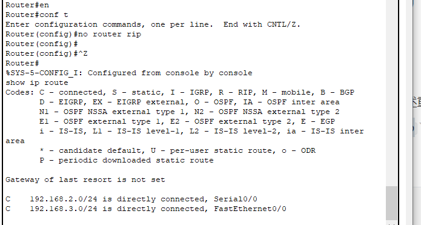
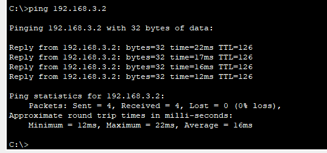
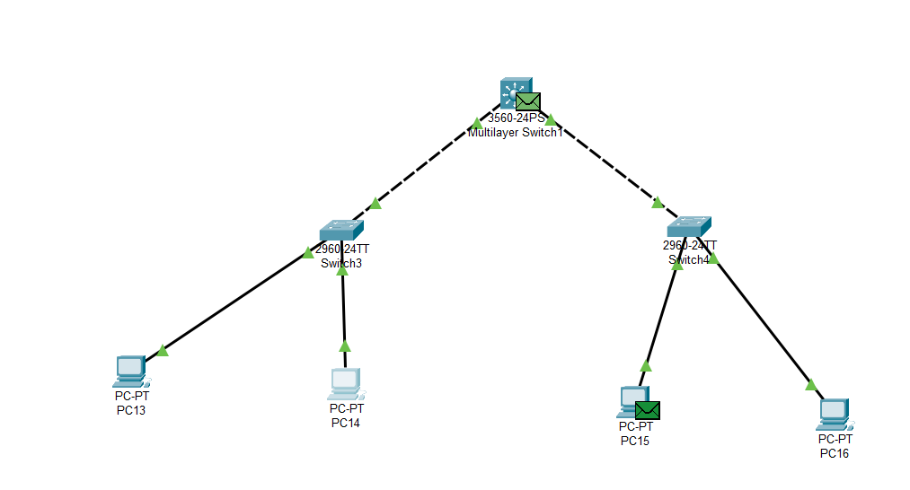

计算机网络实验
计算机网络实验
计算机网络实验 验证性实验实验一Ipconfig常用命令实作一实作二实验二ping常用命令实作一实作二1.使用 ping -t2.使用ping -a3.使用ping -n4.使用ping-I size6.使用ping-r count7.其他ping 问题实验三tracert常用命令实作一实作二实验四ARP常用命令实作一实作二实作三问题一问题二实验五DHCP实作一问题秘籍实验六netstat重用命令实作一实作二实验七DNSnslookup常用命令实作一实作二实作三实验八cache实作一实作二Wireshark 实验数据链路层实作一 熟悉 Ethernet 帧结构问题实作二 了解子网内/外通信时的 MAC 地址问题实作三 掌握 ARP 解析过程问题网络层实作一 熟悉 IP 包结构问题实作二 IP 包的分段与重组问题实作三 考察 TTL 事件问题传输层实作一 熟悉 TCP 和 UDP 段结构问题实作二 分析 TCP 建立和释放连接问题一问题二应用层实作一 了解 DNS 解析问题实作二 了解 HTTP 的请求和应答问题Cisco Packet Tracer 实验1.直接连接两台 PC 构建 LAN2.用交换机构建 LAN问题3.交换机接口地址列表4.生成树协议（Spanning Tree Protocol）5.路由器配置初步说明一说明二说明三说明四说明五说明六交通大学路由器基本配置如下：重庆大学路由器基本配置如下：问题6.静态路由交通大学路由器静态路由配置：重庆大学路由器静态路由配置：7.动态路由 RIP清除静态路由配置：交通大学路由器 RIP 路由配置：重庆大学路由器 RIP 路由配置：8.动态路由 OSPF清除 RIP 路由配置：交通大学路由器 OSPF 路由配置：重庆大学路由器 OSPF 路由配置：反向掩码9.基于端口的网络地址翻译 PAT交通大学路由器接口配置如下：重庆大学路由器接口配置如下：交通大学路由器 OSPF 路由配置：重庆大学路由器 OSPF 路由配置：重庆大学路由器丢包的配置：交通大学路由器 PAT 配置：10.虚拟局域网 VLAN交换机 VLAN 配置：✎ 思考11.虚拟局域网管理 VTP3560 VTP Server 配置：2960A（左边） VTP Client 配置：2960B（右边） VTP Client 配置：✎ 试一试12.VLAN 间的通信3560 交换机配置：✎ 试一试13.DHCP、DNS及Web服务器简单配置✎ 试一试14.WLAN初步配置📬 秘籍
验证性实验
实验一
Ipconfig
ipconfig 是微软操作系统的计算机上用来控制网络连接的一个命令行工具。它的主要用来显示当前网络连接的配置信息（/all 参数）。
常用命令
若要显示所有适配器的基本 TCP/IP 配置，请键入：
ipconfig
若要显示所有适配器的完整 TCP/IP 配置，请键入：
xxxxxxxxxxipconfig /all
若要仅为"本地连接"适配器续订 DHCP 分配的 IP 地址配置，请键入：
xxxxxxxxxxipconfig /renew Local Area Connection
若要在排查 DNS 名称解析问题时刷新 DNS 解析程序缓存，请键入：
xxxxxxxxxxipconfig /flushdns
若要显示名称以 Local 开始的所有适配器的 DHCP 类 ID，请键入：
xxxxxxxxxxipconfig /showclassid Local*
若要将"局部区域连接"适配器的 DHCP 类 ID 设置为 TEST，请键入：
xxxxxxxxxxipconfig /setclassid Local Area Connection TEST
实作一
使用 ipconfig/all 查看自己计算机的网络配置，尽可能明白每行的意思，特别注意 IP 地址、子网掩码 Subnet Mask、网关 Gateway。
实作二
该图是放在虚拟机下生成的Linux版本ipconfig,由图可知位于同一子网。
实验二
ping
ping（Packet Internet Groper），因特网包探索器，用于测试网络连接量的程序 。ping 是工作在 TCP/IP 网络体系结构中应用层的一个服务命令， 主要是向特定的目的主机发送 ICMP（Internet Control Message Protocol 因特网报文控制协议）Echo 请求报文，测试目的站是否可达及了解其有关状态。
常用命令
x-t ：Ping 指定的计算机直到中断。-a ：将地址解析为计算机名。-n count ：发送 count 指定的 ECHO 数据包数。默认值为 4。-l size ：发送包含由 size 指定的数据量的 ECHO 数据包。默认为 32 字节；最大值是65,527。-f ：在数据包中发送"不要分段"标志。数据包就不会被路由上的网关分段。-i ttl :将"生存时间"字段设置为 ttl 指定的值。-v tos :将"服务类型"字段设置为 tos 指定的值。-r count :在"记录路由"字段中记录传出和返回数据包的路由。count 可以指定最少 1 台，最多 9 台计算机。-s count :指定 count 指定的跃点数的时间戳。-j host-list :利用 host-list 指定的计算机列表路由数据包。连续计算机可以被中间网关分隔（路由稀疏源）IP 允许的最大数量为 9。-k host-list :利用 host-list 指定的计算机列表路由数据包。连续计算机不能被中间网关分隔（路由严格源）IP 允许的最大数量为 9。-w timeout :指定超时间隔，单位为毫秒。destination-list :指定要 ping 的远程计算机。
实作一
要测试到某计算机如 重庆交通大学 Web 服务器的连通性，可以使用 ping www.cqjtu.edu.cn 命令，也可直接使用 IP 地址。
请掌握使用该命令后屏幕显示的反馈回来信息的意思，如：TTL、时间等。

可得IP地址为218.70.34.236.
实作二
使用 ping/? 命令了解该命令的各种选项并实际使用。

1.使用 ping -t
不间断地ping指定计算机，知道管理员中断。
2.使用ping -a
Ping-a解析计算机名与NetBios名。就是可以通过ping它的IP地址，可以解析出主机名
学校iP地址应该有防火墙设置 得不到主机名字
3.使用ping -n
该方法指定了发送包数量 一般默认为4
4.使用ping-I size
在默认的情况下Windows的ping发送的数据包大小为32byte，最大能发送65500byte。当一次发送的数据包大于或等于65500byte时，将可能导致接收方计算机宕机。所以微软限制了这一数值；这个参数配合其它参数以后危害非常强大，比如攻击者可以结合-t参数实施DOS攻击。（所以它具有危险性，不要轻易向别人计算机使用）。

6.使用ping-r count
在“记录路由”字段中记录传出和返回数据包的路由，探测经过的路由个数，但最多只能跟踪到9个路由。
尝试过许多IP地址现在都不返回经过路由了
7.其他ping 问题
xxxxxxxxxxTroubleShooting——假设你不能 `ping` 通某计算机或 IP，但你确定该计算机和你之间的网络是连通的，那么可能的原因是什么？该如何处理能保证 `ping` 通？答：可能的原因是对方服务器关闭了，让对方开启即可
xxxxxxxxxx📬 秘籍当你的网络出现故障不能访问某计算机如 `14.215.177.39` (百度的 IP 地址之一 ) 时，我们一般可采用由近及远的连通性测试来确定问题所在。现假设你的 IP 是 `192.168.1.89`，你旁边计算机的 IP 是 `192.168.1.64`，网关的 IP 是 `192.168.1.1` ，那么过程如下：1. `ping 127.0.0.1` ，测试自己计算机的状态，如果 OK，那么说明本机网络软件硬件工作正常，否则，问题在本机，检查本机 TCP/IP 配置即网卡状态等2. `ping 192.168.1.64` ，测试到旁边计算机的连通性，如果OK，那么说明本子网内部工作正常，否则，问题在本机网络出口到交换机之间，检查本机网卡到交换机的连线等3. `ping 192.168.1.1`，测试到网关的连通性，如果 OK，那么说明本子网出口工作正常，否则，问题在网关，这是你无能为力的事情，报告给网管4. `ping 14.215.177.39`，测试到百度的连通性，如果 OK，那就 OK，否则，问题在网关以外，这也是你无能为力的事情，报告给网管或者李彦宏？假设在秘籍中进行的网络排查中，`ping` 百度的 IP 即 `ping 14.215.177.39` 没问题，但 `ping` 百度的域名即 `ping www.baidu.com` 不行，那么可能的原因是什么？如何进行验证和解决？另外，经常有同学问到的："能上 QQ，但不能上网" 跟这个问题的原因是相似的。答：可能的原因是 DNS 发生故障或设置错误而导致解析失败，因为域名是需要经过当地的 DNS 服务器解析成 IP ，再根据 IP 发送数据测试包。验证和解决：1、咨询当地电信部门，是否当地 DNS 服务器故障；2、百度搜索当地 DNS 服务器地址，检查当前 DNS 服务器设置是否正确；3、可临时设置 DNS 服务器地址为 8.8.8.8，该服务器延迟会比较大。
实验三
tracert
TRACERT (Trace Route 的组合缩写)，也称为路由追踪，该命令行程序可用于跟踪 Internet 协议 （IP） 数据包传送到目标地址时经过的路径。
常用命令

实作一
要了解到某计算机如 www.baidu.com 中间经过了哪些节点（路由器）及其它状态，可使用 tracert www.baidu.com命令，查看反馈的信息，了解节点的个数。

实作二
ping.ge这个网站可以探测从全球主要的 ISP 到某站点如 https://qige.io 的线路状态，当然也包括各线路到该主机的路由情况。请使用浏览器访问 http://ping.pe/qige.io 进行了解。

问题一
tracert 能告诉我们路径上的节点以及大致的延迟等信息，那么它背后的原理是什么？本问题可结合第二部分的 Wireshark 实验进行验证。
答：无论什么都是通过路由器在通过浏览器访问的
问题二
在以上两个实作中，如果你留意路径中的节点，你会发现无论是访问百度还是棋歌教学网，路径中的第一跳都是相同的，甚至你应该发现似乎前几个节点都是相同的，你的解释是什么？
答：我们是处于内网，传输数据首先要到达网关。
问题三
在追踪过程中，你可能会看到路径中某些节点显示为 * 号，这是发生了什么？
答：没有出现信息反馈。
实验四
ARP
ARP（Address Resolution Protocol）即地址解析协议，是用于根据给定网络层地址即 IP 地址，查找并得到其对应的数据链路层地址即 MAC地址的协议。 ARP 协议定义在 1982 年的 RFC 826。
常用命令

实作一
运行 arp -a 命令查看当前的 arp 缓存， 请留意缓存了些什么。
然后 ping 一下你旁边的计算机 IP（注意，需保证该计算机的 IP 没有出现在 arp 缓存中，或者使用 arp -d * 先删除全部缓存），再次查看缓存，你会发现一些改变，请作出解释。

实作二
请使用 arp /? 命令了解该命令的各种选项。
实作三
一般而言，arp 缓存里常常会有网关的缓存，并且是动态类型的。
假设当前网关的 IP 地址是 192.168.0.1，MAC 地址是 5c-d9-98-f1-89-64，请使用 arp -s 192.168.0.1 5c-d9-98-f1-89-64 命令设置其为静态类型的。
问题一
你可能会在实作三的操作中得到 "ARP 项添加失败: 请求的操作需要提升" 这样的信息，表示命令没能执行成功，你该如何解决？
答案：给予管理员权限
问题二
在实作三中，为何缓存中常常有网关的信息？
我们将网关或其它计算机的 arp 信息设置为静态有什么优缺点？
答：因为缓存记录的就自己访问的IP和MAC地址。 静态ARP表项通过手工配置和维护，不会被老化，不会被动态ARP表项覆盖。配置静态ARP表项可以增加通信的安全性。静态ARP表项可以限制和指定IP地址的设备通信时只使用指定的MAC地址，此时攻击报文无法修改此表项的IP地址和MAC地址的映射关系，从而保护了本设备和指定设备间的正常通信。
实验五
DHCP
DHCP（Dynamic Host Configuration Protocol）即动态主机配置协议，是一个用于 IP 网络的网络协议，位于 OSI 模型的应用层，使用 UDP 协议工作，主要有两个用途：
用于内部网或网络服务供应商自动分配 IP 地址给用户 用于内部网管理员对所有电脑作中央管理 简单的说，DHCP 可以让计算机自动获取/释放网络配置。
实作一
一般地，我们自动获取的网络配置信息包括：IP 地址、子网掩码、网关 IP 以及 DNS 服务器 IP 等。使用 ipconfig/release 命令释放自动获取的网络配置，并用 ipconfig/renew 命令重新获取，了解 DHCP 工作过程和原理。

问题
在Windows系统下，如果由于某种原因计算机不能获取 DHCP 服务器的配置数据，那么Windows将会根据某种算法自动配置为 169.254.x.x 这样的 IP 地址。显然，这样的 IP 以及相关的配置信息是不能让我们真正接入 Internet 的，为什么？既然不能接入 Internet，那么Winodws系统采用这样的方案有什么意义？
答：自动配置的IP地址和信息只是短暂性的解决计算机不能获取 DHCP 服务器的配置数据的问题，要真正的接入Internet还是得本身计算机的正确IP地址。意义：假如某天因 DHCP 服务器问题从而不能获得网络配置，那么我们可以查看隔壁教室计算机的配置信息来手动进行网络配置，从而使该计算机能够接入 Internet。
秘籍
在我校不少地方如教室，计算机都采用了 DHCP 来获得网络配置。假如某天因 DHCP 服务器问题从而不能获得网络配置，那么我们可以查看隔壁教室计算机的配置信息来手动进行网络配置，从而使该计算机能够接入 Internet。
经常的，在一个固定地方的网络配置我都喜欢采用 静态/手动配置，而不是动态 DHCP 来进行。你能想到是什么原因吗？
答：因为 DHCP 维护的地址池是有限的，那么我可以不停的发出 DHCP 请求，从而导致 DHCP 地址耗尽。然后我自己再运行一个 DHCP 服务器来提供虚假的网络信息，特别是伪造的网关和 DNS 信息。手动配置没有自动请求分配地址的时间延迟网络连接更迅速;每台机器IP固定,更便于网络管理和使用。
实验六
netstat
无论是使用 TCP 还是 UDP，任何一个网络服务都与特定的端口（Port Number）关联在一起。因此，每个端口都对应于某个通信协议/服务。
netstat（Network Statistics）是在内核中访问网络连接状态及其相关信息的命令行程序，可以显示路由表、实际的网络连接和网络接口设备的状态信息，以及与 IP、TCP、UDP 和 ICMP 协议相关的统计数据，一般用于检验本机各端口的网络服务运行状况。
重用命令
xxxxxxxxxx-a或–all：显示所有连线中的Socket；-A<网络类型>或–<网络类型>：列出该网络类型连线中的相关地址；-c或–continuous：持续列出网络状态；-C或–cache：显示路由器配置的快取信息；-e或–extend：显示网络其他相关信息；-F或–fib：显示FIB；-g或–groups：显示多重广播功能群组组员名单；-h或–help：在线帮助；-i或–interfaces：显示网络界面信息表单；-l或–listening：显示监控中的服务器的Socket；-M或–masquerade：显示伪装的网络连线；-n或–numeric：直接使用ip地址，而不通过域名服务器；-N或–netlink或–symbolic：显示网络硬件外围设备的符号连接名称；-o或–timers：显示计时器；-p或–programs：显示正在使用Socket的程序识别码和程序名称；-r或–route：显示Routing Table；-s或–statistice：显示网络工作信息统计表；-t或–tcp：显示TCP传输协议的连线状况；-u或–udp：显示UDP传输协议的连线状况；-v或–verbose：显示指令执行过程；-V或–version：显示版本信息；-w或–raw：显示RAW传输协议的连线状况；-x或–unix：此参数的效果和指定”-A unix”参数相同；–ip或–inet：此参数的效果和指定”-A inet”参数相同。
实作一
Windows 系统将一些常用的端口与服务记录在 C:\WINDOWS\system32\drivers\etc\services 文件中，请查看该文件了解常用的端口号分配。
实作二
使用 netstat -an 命令，查看计算机当前的网络连接状况。更多的 netstat 命令选项
实验七
DNS
DNS（Domain Name System）即域名系统，是互联网的一项服务。它作为将域名和 IP 地址相互映射的一个分布式数据库，能够使人更方便地访问互联网。DNS 使用 TCP 和 UDP 的 53 号端口。
nslookup常用命令
xxxxxxxxxxnslookup # 进入交互模式域名 # 进行正向解析IP地址 # 进行反向解析(有些地址不能反向解析)lserver + IP地址 # 更换DNS服务器set all # 显示当前的查询设置set type =MX # 查询邮件交换记录set type =ns # 查询某子域的域名服务器set type =AAAA #查询域名对应的IPv6地址(查询IPv6站点有效:如bbs6.ustc.edu.cn)设置完成后再进行查询即可
实作一
Windows 系统将一些固定的/静态的 DNS 信息记录在 C:\WINDOWS\system32\drivers\etc\hosts 文件中，如我们常用的 localhost 就对应 127.0.0.1 。请查看该文件看看有什么记录在该文件中。

实作二
解析过的 DNS 记录将会被缓存，以利于加快解析速度。请使用 ipconfig /displaydns 命令查看。我们也可以使用 ipconfig /flushdns 命令来清除所有的 DNS 缓存。

实作三
使用 nslookup qige.io 命令，将使用默认的 DNS 服务器查询该域名。当然你也可以指定使用 CloudFlare（1.1.1.1）或 Google（8.8.8.8） 的全球 DNS 服务器来解析，如：nslookup qige.io 8.8.8.8，当然，由于你懂的原因，这不一定会得到正确的答案。

实验八
cache
Cache 即缓存，是 IT 领域一个重要的技术。我们此处提到的 cache 主要是浏览器缓存。
浏览器缓存是根据 HTTP 报文的缓存标识进行的，是性能优化中简单高效的一种优化方式了。一个优秀的缓存策略可以缩短网页请求资源的距离，减少延迟，并且由于缓存文件可以重复利用，还可以减少带宽，降低网络负荷。
实作一
打开 Chrome 或 Firefox 浏览器，访问 https://qige.io ，接下来敲 F12 键 或 Ctrl + Shift + I 组合键打开开发者工具，选择 Network 面板后刷新页面，你会在开发者工具底部看到加载该页面花费的时间。请进一步查看哪些文件被 cache了，哪些没有。

从图中即可看出哪些文件被cache
实作二
接下来仍在 Network 面板，选择 Disable cache 选项框，表明当前不使用 cache，页面数据全部来自于 Internet，刷新页面，再次在开发者工具底部查看加载该页面花费的时间。你可比对与有 cache 时的加载速度差异。
上幅图片显示加载用了227ms 选择了Disable cache 后明显加载时间增加 时间耗费了1.23s
Wireshark 实验
数据链路层
实作一 熟悉 Ethernet 帧结构
使用 Wireshark 任意进行抓包，熟悉 Ethernet 帧的结构，如：目的 MAC、源 MAC、类型、字段等。

目的 MAC、源 MAC经过加密处理，次处类型为IPV4.
问题
你会发现 Wireshark 展现给我们的帧中没有校验字段，请了解一下原因
答：Wireshark 会忽略此检验字段
实作二 了解子网内/外通信时的 MAC 地址
ping你旁边的计算机（同一子网），同时用 Wireshark 抓这些包（可使用 icmp 关键字进行过滤以利于分析），记录一下发出帧的目的 MAC 地址以及返回帧的源 MAC 地址是多少？这个 MAC 地址是谁的？
发出帧的目的 MAC 地址以及返回帧的源 MAC 地址是zte_00:00:00(34:4b:50:00:00:00) 这个地址是ping 对象的
然后
ping qige.io（或者本子网外的主机都可以），同时用 Wireshark 抓这些包（可 icmp 过滤），记录一下发出帧的目的 MAC 地址以及返回帧的源 MAC 地址是多少？这个 MAC 地址是谁的？发出帧的目的 MAC 地址以及返回帧的源 MAC 地址是zte_32:84:18(c8:ea:f8:32:84:18) 这个地址是qige.io的服务器MAC地址
再次
ping www.cqjtu.edu.cn（或者本子网外的主机都可以），同时用 Wireshark 抓这些包（可 icmp 过滤），记录一下发出帧的目的 MAC 地址以及返回帧的源 MAC 地址又是多少？这个 MAC 地址又是谁的？

发出帧的目的 MAC 地址以及返回帧的源 MAC 地址是zte_32:84:18(c8:ea:f8:32:84:18) 这个地址是www.cqjtu.edu.cn的服务器MAC地址
问题
通过以上的实验，你会发现： 访问本子网的计算机时，目的 MAC 就是该主机的，访问非本子网的计算机时，目的 MAC 是网关的 请问原因是什么？
因为本机接收到的本子网以外的信息必定经由网关发送给我，同理本机发送到本子往外信息的下个地址必定是网关的mac地址。而本子网内的可以直接到达。
实作三 掌握 ARP 解析过程
为防止干扰，先使用
arp -d *命令清空 arp 缓存ping你旁边的计算机（同一子网），同时用 Wireshark 抓这些包（可 arp 过滤），查看 ARP 请求的格式以及请求的内容，注意观察该请求的目的 MAC 地址是什么。再查看一下该请求的回应，注意观察该回应的源 MAC 和目的 MAC 地址是什么。再次使用
arp -d *命令清空 arp 缓存然后
ping qige.io（或者本子网外的主机都可以），同时用 Wireshark 抓这些包（可 arp 过滤）。查看这次 ARP 请求的是什么，注意观察该请求是谁在回应。
问题
通过以上的实验，你应该会发现，
- ARP 请求都是使用广播方式发送的
- 如果访问的是本子网的 IP，那么 ARP 解析将直接得到该 IP 对应的 MAC；如果访问的非本子网的 IP， 那么 ARP 解析将得到网关的 MAC。
请问为什么？
答 ARP代理，访问非子网IP时是通过路由器访问的，路由器再把发出去，目标IP收到请求后，再通过路由器端口IP返回去，那么ARP解析将会得到网关的MAC
网络层
实作一 熟悉 IP 包结构
使用 Wireshark 任意进行抓包（可用 ip 过滤），熟悉 IP 包的结构，如：版本、头部长度、总长度、TTL、协议类型等字段。

问题
为提高效率，我们应该让 IP 的头部尽可能的精简。但在如此珍贵的 IP 头部你会发现既有头部长度字段，也有总长度字段。请问为什么？
答 ：便于传输时的识别IP总长度，节省时间，当长度超过15kb时就会被返回链路层进行分段。
实作二 IP 包的分段与重组
根据规定，一个 IP 包最大可以有 64K 字节。但由于 Ethernet 帧的限制，当 IP 包的数据超过 1500 字节时就会被发送方的数据链路层分段，然后在接收方的网络层重组。
缺省的，ping 命令只会向对方发送 32 个字节的数据。我们可以使用 ping www.cqjtu.edu.cn -l 2000命令指定要发送的数据长度。此时使用 Wireshark 抓包（用ip.addr == 218.70.34.236 进行过滤），了解 IP 包如何进行分段，如：分段标志、偏移量以及每个包的大小等

可以明显看到 分了两个包 因为最大1500，所以2000的包被分为了1500 和548 的两个包发出。
问题
分段与重组是一个耗费资源的操作，特别是当分段由传送路径上的节点即路由器来完成的时候，所以 IPv6 已经不允许分段了。那么 IPv6 中，如果路由器遇到了一个大数据包该怎么办？
答：IPv6 中，如果路由器遇到了一个大数据包会直接丢弃，然后通知发送端重新传输。
实作三 考察 TTL 事件
在 IP 包头中有一个 TTL 字段用来限定该包可以在 Internet上传输多少跳（hops），一般该值设置为 64、128等。
在验证性实验部分我们使用了 tracert 命令进行路由追踪。其原理是主动设置 IP 包的 TTL 值，从 1 开始逐渐增加，直至到达最终目的主机。
请使用 tracert www.baidu.com 命令进行追踪，此时使用 Wireshark 抓包（用 icmp 过滤），分析每个发送包的 TTL 是如何进行改变的，从而理解路由追踪原理。


TTL 虽然定义为生命期即 Time To Liv，每到达一个节点返回一个TTL信息，TTL逐渐增加1直到到达目的主机。
问题
在 IPv4 中，TTL 虽然定义为生命期即 Time To Live，但现实中我们都以跳数/节点数进行设置。如果你收到一个包，其 TTL 的值为 50，那么可以推断这个包从源点到你之间有多少跳？
答：至少50跳
传输层
实作一 熟悉 TCP 和 UDP 段结构
用 Wireshark 任意抓包（可用 tcp 过滤），熟悉 TCP 段的结构，如：源端口、目的端口、序列号、确认号、各种标志位等字段。
用 Wireshark 任意抓包（可用 udp 过滤），熟悉 UDP 段的结构，如：源端口、目的端口、长度等。

问题
由上大家可以看到 UDP 的头部比 TCP 简单得多，但两者都有源和目的端口号。请问源和目的端口号用来干什么？
答：源端口就是指本地端口，目的端口就是远程端口 源端口就是本机程序用来发送数据的端口，目的端口就是对方主机用哪个端口接收
实作二 分析 TCP 建立和释放连接
打开浏览器访问 qige.io 网站，用 Wireshark 抓包（可用 tcp 过滤后再使用加上
Follow TCP Stream），不要立即停止 Wireshark 捕获，待页面显示完毕后再多等一段时间使得能够捕获释放连接的包。请在你捕获的包中找到三次握手建立连接的包，并说明为何它们是用于建立连接的，有什么特征。
注意到”第一次握手”客户端发送的TCP报文中以[SYN]作为标志位，并且客户端序号Seq=0；
接下来”第二次握手”服务器返回的TCP报文中以[SYN，ACK]作为标志位；并且服务器端序号Seq=0；确认号Ack=1(“第一次握手”中客户端序号Seq的值+1);
最后”第三次握手”客户端再向服务器端发送的TCP报文中以[ACK]作为标志位；其中客户端序号Seq=1（“第二次握手”中服务器端确认号Ack的值）；确认号Ack=1(“第二次握手”中服务器端序号Seq的值+1)。
请在你捕获的包中找到四次挥手释放连接的包，并说明为何它们是用于释放连接的，有什么特征。
第一次挥手”客户端发送的FIN请求释放连接报文以[FIN，ACK]作为标志位，其中报文序号Seq=800；确认号Ack=8785； ”第二次挥手”服务器端继续返回的FIN同意释放连接报文以[FIN，ACK]作为标志位；其中报文序号Seq=8809；确认号Ack=801； ”第三次挥手”客户端发出的ACK确认接收报文以[ACK]作为标志位；其中报文序号Seq=801；确认号Ack=8809；
第四次挥手没从中发现
问题一
去掉 Follow TCP Stream，即不跟踪一个 TCP 流，你可能会看到访问 qige.io 时我们建立的连接有多个。请思考为什么会有多个连接？作用是什么？
多个连接是为了更快的传输数据，为用户提供更好的服务。
问题二
我们上面提到了释放连接需要四次挥手，有时你可能会抓到只有三次挥手。原因是什么？
答:是因为第二次握手和第三次挥手合并了，FIN报文用在本端没有数据发送给对方时，关闭从本端到对端的连接。但是并不影响从对方到本端的连接，也就是说本端仍然可以接收对方的数据。即发送通道关闭，接收通道正常。 如果对方收到本端FIN报文时，对方的接收通道就会关闭。此时，如果对方也没有数据发给本端，那么对方也会发送FIN给本端，用于关闭从对方到本端的连接，这时候就可能出现ACK和FIN合在一起的情况。 当然，如果对方仍然有数据发送，那么就等数据发完，再发FIN来关闭连接，这时候就是四次挥手了。
应用层
应用层的协议非常的多，我们只对 DNS 和 HTTP 进行相关的分析。
实作一 了解 DNS 解析
先使用
ipconfig /flushdns命令清除缓存，再使用nslookup qige.io命令进行解析，同时用 Wireshark 任意抓包（可用 dns 过滤）。你应该可以看到当前计算机使用 UDP，向默认的 DNS 服务器的 53 号端口发出了查询请求，而 DNS 服务器的 53 号端口返回了结果。
问题
你可能会发现对同一个站点，我们发出的 DNS 解析请求不止一个，思考一下是什么原因？
答：为了使服务器的负载得到平衡(因为每天访问站点的次数非常多）网站就设有好几个计算机，每一个计算机都运行同样的服务器软件。这些计算机的IP地址不一样，但它们的域名却是相同的。这样，第一个访问该网址的就得到第一个计算机的IP地址，而第二个访问者就得到第二个计算机的IP地址等等。这样可使每一个计算机的负荷不会太大。
实作二 了解 HTTP 的请求和应答
打开浏览器访问 qige.io 网站，用 Wireshark 抓包（可用http 过滤再加上
Follow TCP Stream），不要立即停止 Wireshark 捕获，待页面显示完毕后再多等一段时间以将释放连接的包捕获。请在你捕获的包中找到 HTTP 请求包，查看请求使用的什么命令，如：
GET, POST。并仔细了解请求的头部有哪些字段及其意义。
Accept:告诉WEB服务器自己接受什么介质类型 Content-Type:WEB 服务器告诉浏览器自己响应的对象的类型 Content-Length:WEB 服务器告诉浏览器自己响应的对象的长度 Cache-Control:用来指示缓存系统（服务器上的，或者浏览器上的）应该怎样处理缓存 Host:客户端指定自己想访问的WEB服务器的域名/IP 地址和端口号 POST:请求的方式，其中包括URI和版本
请在你捕获的包中找到 HTTP 应答包，查看应答的代码是什么，如：
200, 304, 404等。并仔细了解应答的头部有哪些字段及其意义。应答代码是200 Server：服务器通过这个头告诉浏览器服务器的类型。Transfer-Encoding：告诉浏览器数据的传送格式。Content- Type：表示后面的文档属于什么MIME类型。Cache-Control：指定请求和响应遵循的缓存机制
问题
刷新一次 qige.io 网站的页面同时进行抓包，你会发现不少的 304 代码的应答，这是所请求的对象没有更改的意思，让浏览器使用本地缓存的内容即可。那么服务器为什么会回答 304 应答而不是常见的 200 应答？
答：浏览器中的缓存，可以直接在缓存区获取到需要的内容，不需要服务器在回复对应的内容，可以减少服务器的一些工作，减小开销。采用200应答就是要完全的将内容发送给客服端，这个会增加服务器的一些开销等
Cisco Packet Tracer 实验
1.直接连接两台 PC 构建 LAN
2.用交换机构建 LAN
构建如下拓扑结构的局域网：
各PC的基本网络配置如下表：
| 机器名 | IP | 子网掩码 |
|---|---|---|
| PC0 | 192.168.1.1 | 255.255.255.0 |
| PC1 | 192.168.1.2 | 255.255.255.0 |
| PC2 | 192.168.2.1 | 255.255.255.0 |
| PC3 | 192.168.2.2 | 255.255.255.0 |
问题
PC0 能否
ping通 PC1、PC2、PC3 ？由上图得:PC0 能够Ping 通PC1，不能够Ping通 PC2 PC3
PC3 能否
ping通 PC0、PC1、PC2 ？为什么？PC3 能够Ping 通PC2 ，不能够Ping通 PC2 PC0 ,因为只能Ping通处于同一个子网下的
将 4 台 PC 的掩码都改为
255.255.0.0，它们相互能ping通吗？为什么？
它们相互能
ping通 因为它们的IP地址与子网掩码相与得到的结果都是192.168.0.0，处于同一子网下，所以能ping通使用二层交换机连接的网络需要配置网关吗？为什么？
如果只涉及局域网,在二层交换机中就不必配置网关
如何涉及广域网 配置网关尤为重要，因为其与相连的自治系统可以向核心系统通告可达信息
5.集线器 Hub 是工作在物理层的多接口设备，它与交换机的区别是什么？请在 CPT 软件中用 Hub 构建网络进行实际验证。
集线器（HUB）是中继器的一种形式。它工作在物理层，与中继器一样，常用于两个网络节点之间物理信号的双向转发。完成信号的复制，调整和放大功能。不同的是HUB能提供多端口服务。
交换机（SWITCH）类似于HUB，能连接两个局域网段。它工作在数据链路层，能起到过滤帧的作用。SWITCH检测帧的源地址及目的地址。如果在同一网络段则不转发。如果不在同一网段，就把帧转发到另一网段。

一样可以Ping 通
3.交换机接口地址列表
二层交换机是一种即插即用的多接口设备，它对于收到的帧有 3 种处理方式：广播、转发和丢弃（请弄清楚何时进行何种操作）。那么，要转发成功，则交换机中必须要有接口地址列表即 MAC 表，该表是交换机通过学习自动得到的！
仍然构建上图的拓扑结构，并配置各计算机的 IP 在同一个一个子网，使用工具栏中的放大镜点击某交换机如左边的 Switch3，选择 MAC Table，可以看到最初交换机的 MAC 表是空的，也即它不知道该怎样转发帧（那么它将如何处理？）。
用 PC0 访问（ping）PC1 后，再查看该交换机的 MAC 表，现在有相应的记录，请思考如何得来。随着网络通信的增加，各交换机都将生成自己完整的 MAC 表，此时交换机的交换速度就是最快的！
交换机具有学习的能力每次接受到一个记录，则会将对应Mac地址放入自己表中，如果该Mac一定时间没有再次出现，则会被定期删除，在再次接受到该地址依旧学习。
4.生成树协议（Spanning Tree Protocol）
交换机在目的地址未知或接收到广播帧时是要进行广播的。如果交换机之间存在回路/环路，那么就会产生广播循环风暴，从而严重影响网络性能。
而交换机中运行的 STP 协议能避免交换机之间发生广播循环风暴。
只使用交换机，构建如下拓扑：
这是初始时的状态。我们可以看到交换机之间有回路，这会造成广播帧循环传送即形成广播风暴，严重影响网络性能。
随后，交换机将自动通过生成树协议（STP）对多余的线路进行自动阻塞（Blocking），以形成一棵以 Switch4 为根（具体哪个是根交换机有相关的策略）的具有唯一路径树即生成树！
经过一段时间，随着 STP 协议成功构建了生成树后，Switch5 的两个接口当前物理上是连接的，但逻辑上是不通的，处于Blocking状态（桔色）如下图所示：
在网络运行期间，假设某个时候 Switch4 与 Switch5 之间的物理连接出现问题（将 Switch4 与 Switch5 的连线剪掉），则该生成树将自动发生变化。Switch5 上方先前 Blocking 的那个接口现在活动了（绿色），但下方那个接口仍处于 Blocking 状态（桔色）。如下图所示：
5.路由器配置初步
我们模拟重庆交通大学和重庆大学两个学校的连接，构建如下拓扑：
说明一
交通大学与重庆大学显然是两个不同的子网。在不同子网间通信需通过路由器。
路由器的每个接口下至少是一个子网，图中我们简单的规划了 3 个子网：
- 左边路由器是交通大学的，其下使用交换机连接交通大学的网络，分配网络号
192.168.1.0/24，该路由器接口也是交通大学网络的网关，分配 IP 为192.168.1.1 - 右边路由器是重庆大学的，其下使用交换机连接重庆大学的网络，分配网络号
192.168.3.0/24，该路由器接口也是重庆大学网络的网关，分配 IP 为192.168.3.1 - 两个路由器之间使用广域网接口相连，也是一个子网，分配网络号
192.168.2.0/24
说明二
现实中，交通大学和重庆大学的连接是远程的。该连接要么通过路由器的光纤接口，要么通过广域网接口即所谓的 serial 口（如拓扑图所示）进行，一般不会通过双绞线连接（为什么？）。
下面我们以通过路由器的广域网口连接为例来进行相关配置。请注意：我们选用的路由器默认没有广域网模块（名称为 WIC-1T 等），需要关闭路由器后添加，然后再开机启动。
说明三
在模拟的广域网连接中需注意 DCE 和 DTE 端（连线时线路上有提示，带一个时钟标志的是 DCE 端。有关 DCE 和 DTE 的概念请查阅相关资料。），在 DCE 端需配置时钟频率 64000
说明四
路由器有多种命令行配置模式，每种模式对应不同的提示符及相应的权限。
请留意在正确的模式下输入配置相关的命令。
- User mode：用户模式
- Privileged mode：特权模式
- Global configuration mode：全局配置模式
- Interface mode：接口配置模式
- Subinterface mode：子接口配置模式
说明五
在现实中，对新的路由器，显然不能远程进行配置，我们必须在现场通过笔记本的串口与路由器的 console 接口连接并进行初次的配置（注意设置比特率为9600）后，才能通过网络远程进行配置。这也是上图左上画出笔记本连接的用意。
说明六
在路由器的 CLI 界面中，可看到路由器刚启动成功后，因为无任何配置，将会提示是否进行对话配置（Would you like to enter the initial configuration dialog?），因其步骤繁多，请选择 NO
比如交通大学路由器的初步配置可以如下：

拓扑图中路由器各接口配置数据如下：
| 接口名 | IP | 子网掩码 |
|---|---|---|
| 交通大学 Router2 以太网口 | 192.168.1.1 | 255.255.255.0 |
| 交通大学 Router2 广域网口 | 192.168.2.1 | 255.255.255.0 |
| 重庆大学 Router3 以太网口 | 192.168.3.1 | 255.255.255.0 |
| 重庆大学 Router3 广域网口 | 192.168.2.2 | 255.255.255.0 |
拓扑图中各 PC 配置数据如下：
| 节点名 | IP | 子网掩码 | 网关 |
|---|---|---|---|
| 交通大学 PC0 | 192.168.1.2 | 255.255.255.0 | 192.168.1.1 |
| 交通大学 PC1 | 192.168.1.3 | 255.255.255.0 | 192.168.1.1 |
| 重庆大学 PC2 | 192.168.3.2 | 255.255.255.0 | 192.168.3.1 |
| 重庆大学 PC3 | 192.168.3.3 | 255.255.255.0 | 192.168.3.1 |
交通大学路由器基本配置如下：
以太网口：
xxxxxxxxxxRouter>enable // 从普通模式进入特权模式Router#configure terminal // 进入全局配置模式Router(config)#interface f0/0 // 进入配置以太网口模式Router(config-if)#ip address 192.168.1.1 255.255.255.0 // 配置该接口的 IPRouter(config-if)#no shutdown // 激活接口Router(config-if)#^z // 直接退到特权模式Router#
广域网口：
xxxxxxxxxxRouter>en // 从普通模式进入特权模式Router#conf t // 进入全局配置模式Router(config)#interface s0/0 // 进入配置广域网口模式Router(config-if)#ip address 192.168.2.1 255.255.255.0 //配置该接口的 IPRouter(config-if)#clock rate 64000 // 其为 DCE 端，配置时钟频率Router(config-if)#no shutdown // 激活接口Router(config-if)#^z // 直接退到特权模式Router#
重庆大学路由器基本配置如下：
以太网口：
xxxxxxxxxxRouter>en // 从普通模式进入特权模式Router#conf t // 进入全局配置模式Router(config)#int f0/0 // 进入配置以太网口模式Router(config-if)#ip address 192.168.3.1 255.255.255.0 // 配置该接口的 IPRouter(config-if)#no shutdown // 激活接口Router(config-if)#^z // 直接退到特权模式Router#
广域网口：
xxxxxxxxxxRouter>en // 从普通模式进入特权模式Router#conf t // 进入全局配置模式Router(config)#int s0/0 // 进入配置广域网口模式Router(config-if)#ip address 192.168.2.2 255.255.255.0 //配置该接口的 IPRouter(config-if)#no shutdown // 激活接口Router(config-if)#^z // 直接退到特权模式Router#
因为2621XM不带广域网接口：
因此需要先做如下操作(关机后需要重新配置路由):
最后能够连通网络:如下图所示：
目前同一子网内可以Ping通，不同子网还不能够Ping通 如下图所示
问题
现在交通大学内的各 PC 及网关相互能 ping 通，重庆大学也类似。但不能从交大的 PC ping 通重大的 PC，反之亦然，也即不能跨子网。为什么？
答：测试网络时，经常用的方法是Ping某个IP地址，如果能Ping通，则说明这条链路是畅通的，如Ping不通，则说明这个链路不通，这个测试方法得出的结论是不严谨的，也不一定是正确的。 Ping功能不像完整的TCP/IP数据包，Ping功能发送的只不过是ICMP控制报文协议包。当你使用Ping功能时，本地PC会首先查询本地的ARP地址映射表，如果目的IP不在ARP缓存中，则受限会查询ARP映射表。如果你的电路连接的是一般路由器即无没有三层交换路由功能，本地电路查询ARP映射表的时候，会发出一个MAC层目的地址为路由器MAC地址的ICMP数据包，路由器收到ICMP数据包之后，经过地址过滤，发现目的IP地址不是其路由器的子网，则会将此ICMP包抛弃，不会发出ARP查询包进行ARP地址查询。如果本地电脑连接的是有三层交互路由功能的交换机或者路由器，则其会发出ARP查询数据包进行网络查询。
6.静态路由
静态路由是非自适应性路由协议，是由网络管理人员手动配置的，不能够根据网络拓扑的变化而改变。 因此，静态路由简单高效，适用于结构非常简单的网络。
在当前这个简单的拓扑结构中我们可以使用静态路由，即直接告诉路由器到某网络该怎么走即可。
在前述路由器基本配置成功的情况下使用以下命令进行静态路由协议的配置：
交通大学路由器静态路由配置：
xxxxxxxxxxRouter>en // 从普通模式进入特权模式Router#conf t // 进入全局配置模式Router(config)#ip route 192.168.3.0 255.255.255.0 192.168.2.2 // 告诉交通大学路由器到 192.168.3.0 这个网络的下一跳是 192.168.2.2Router(config)#exit //退到特权模式Router#show ip route //查看路由表
重庆大学路由器静态路由配置：
xxxxxxxxxxRouter>en // 从普通模式进入特权模式Router#conf t // 进入全局配置模式Router(config)#ip route 192.168.1.0 255.255.255.0 192.168.2.1 // 告诉重庆大学路由器到 192.168.1.0 这个网络的下一跳是 192.168.2.1Router(config)#exit //退到特权模式Router#show ip route //查看路由表
查看路由表你可看到标记为 S 的一条路由，S 表示 Static 。
至此，这些 PC 能全部相互 ping 通！
第一次丢包属于正常行为，第一次没找到。
7.动态路由 RIP
动态路由协议采用自适应路由算法，能够根据网络拓扑的变化而重新计算机最佳路由。
RIP 的全称是 Routing Information Protocol，是距离矢量路由的代表（目前虽然淘汰，但可作为我们学习的对象）。使用 RIP 协议只需要告诉路由器直接相连有哪些网络即可，然后 RIP 根据算法自动构建出路由表。
因为我们模拟的网络非常简单，因此不能同时使用静态和动态路由，否则看不出效果，所以我们需要把刚才配置的静态路由先清除掉。
清除静态路由配置：
直接关闭路由器电源。相当于没有保存任何配置，然后各接口再按照前面基本配置所述重新配置 IP 等参数（推荐此方法，可以再熟悉一下接口的配置命令）；
使用
no命令清除静态路由。在全局配置模式下，交通大学路由器使用：no ip route 192.168.3.0 255.255.255.0 192.168.2.2，重庆大学路由器使用：no ip route 192.168.1.0 255.255.255.0 192.168.2.1。相当于使用no命令把刚才配置的静态路由命令给取消。
交通大学路由器 RIP 路由配置：
xxxxxxxxxxRouter>en // 从普通模式进入特权模式Router#conf t // 进入全局配置模式Router(config)#router rip // 启用 RIP 路由协议，注意是 router 命令Router(config-router)#network 192.168.1.0 // 网络 192.168.1.0 与我直连Router(config-router)#network 192.168.2.0 // 网络 192.168.2.0 与我直连Router(config-router)#^z //直接退到特权模式Router#show ip route //查看路由表
重庆大学路由器 RIP 路由配置：
xxxxxxxxxxRouter>en // 从普通模式进入特权模式Router#conf t // 进入全局配置模式Router(config)#router rip // 启用RIP路由协议，注意是 router 命令Router(config-router)#network 192.168.3.0 // 网络 192.168.3.0 与我直连Router(config-router)#network 192.168.2.0 // 网络 192.168.2.0 与我直连Router(config-router)#^z //直接退到特权模式Router#show ip route //查看路由表
查看路由表你可看到标记为 R 的一条路由，R 表示 RIP 。
至此，这些 PC 也能全部相互 ping 通！
‘

8.动态路由 OSPF
OSPF（Open Shortest Path First 开放式最短路径优先）是一个内部网关协议（Interior Gateway Protocol，简称 IGP）， 用于在单一自治系统（Autonomous System，AS）内决策路由。OSPF 性能优于 RIP，是当前域内路由广泛使用的路由协议。
同样的，我们需要把刚才配置的 RIP 路由先清除掉。
清除 RIP 路由配置：
直接关闭路由器电源。相当于没有保存任何配置，然后各接口再按照前面基本配置所述重新配置 IP 等参数
使用
no命令清除 RIP 路由。在全局配置模式下，各路由器都使用：no router rip命令进行清除
交通大学路由器 OSPF 路由配置：
xxxxxxxxxxRouter>en // 从普通模式进入特权模式Router#conf t // 进入全局配置模式Router(config)#router ospf 1 // 启用 OSPF 路由协议，进程号为1（可暂不理会进程号概念）Router(config-router)#network 192.168.1.0 0.0.0.255 area 0 // 自治域0中的属于 192.168.1.0/24 网络的所有主机（反向掩码）参与 OSPFRouter(config-router)#network 192.168.2.0 0.0.0.255 area 0 // 自治域0中的属于 192.168.2.0/24 网络的所有主机（反向掩码）参与 OSPFRouter(config-router)#^z //直接退到特权模式Router#show ip route //查看路由表

重庆大学路由器 OSPF 路由配置：
xxxxxxxxxxRouter>en // 从普通模式进入特权模式Router#conf t // 进入全局配置模式Router(config)#router ospf 1 // 启用 OSPF 路由协议，进程号为1Router(config-router)#network 192.168.3.0 0.0.0.255 area 0 // 自治域0中的属于 192.168.3.0/24 网络的所有主机（反向掩码）参与 OSPFRouter(config-router)#network 192.168.2.0 0.0.0.255 area 0 // 自治域0中的属于 192.168.2.0/24 网络的所有主机（反向掩码）参与 OSPFRouter(config-router)#^z //直接退到特权模式Router#show ip route //查看路由表
查看路由表你可看到标记为 O 的一条路由，O 表示 OSPF 。
至此，这些 PC 能全部相互 ping 通！

反向掩码
我们常见的子网掩码是所谓的正向掩码，用连续的 1 和 0 来表示，其中 1 表示需精确匹配， 0 则无需，以此得到网络号。
类似的，反向掩码也使用连续的 1 和 0 来表示，但相反，其中 0 表示需精确匹配， 1 则无需，以此得到相关的 IP，主要用于 OSPF 中。
还有一个通配符掩码，也采用与反向掩码相似的规则，主要用于访问控制列表 ACL 中。
用途：
xxxxxxxxxx掩码主要用于IP地址配置时候使用反掩码主要用于动态路由协议通告的时候使用通配符主要用于ACL配置时候使用
9.基于端口的网络地址翻译 PAT
网络地址转换（NAT，Network Address Translation）被各个 Internet 服务商即 ISP 广泛应用于它们的网络中，也包括 WiFi 网络。 原因很简单，NAT 不仅完美地解决了 lP 地址不足的问题，而且还能够有效地避免来自网络外部的攻击，隐藏并保护网络内部的计算机。
NAT 的实现方式一般有三种：
- 静态转换： Static NAT
- 动态转换： Dynamic NAT
- 端口多路复用： OverLoad
端口多路复用使用最多也最灵活。OverLoad 是指不仅改变发向 Internet 数据包的源 IP 地址，同时还改变其源端口，即进行了端口地址转换（PAT，Port Address Translation）。
采用端口多路复用方式，内部网络的所有主机均可共享一个合法外部 IP 地址实现对 Internet 的访问，从而可以最大限度地节约IP地址资源。 同时，又可隐藏网络内部的所有主机，有效避免来自 Internet 的攻击。因此，目前网络中应用最多的就是端口多路复用方式。
我们仍然使用重庆交通大学和重庆大学两个学校的拓扑进行 PAT 实验。我们需要保证两个学校的路由已经配置成功，无论使用静态路由还是动态路由，以下我们给出完整的配置过程：设定这两个学校的路由器使用 OSPF 协议，模拟交通大学使用内部 IP 地址（192.168.1.0/24），模拟重庆大学使用外部 IP 地址（8.8.8.0/24），两个路由器之间使用外部 IP 地址（202.202.240.0/24），在交通大学的出口位置即广域网口实施 PAT。
拓扑图中各 PC 配置数据如下：
| 节点名 | IP | 子网掩码 | 网关 |
|---|---|---|---|
| 交通大学 PC0 | 192.168.1.2 | 255.255.255.0 | 192.168.1.1 |
| 交通大学 PC1 | 192.168.1.3 | 255.255.255.0 | 192.168.1.1 |
| 重庆大学 PC2 | 8.8.8.2 | 255.255.255.0 | 8.8.8.1 |
| 重庆大学 PC3 | 8.8.8.3 | 255.255.255.0 | 8.8.8.1 |
🗣 请留意重庆大学两个 PC 的网络配置发生改变，我们模拟为外部/公网 IP 地址！
拓扑图中路由器各接口配置数据如下：
| 接口名 | IP | 子网掩码 |
|---|---|---|
| 交通大学 Router2 以太网口 | 192.168.1.1 | 255.255.255.0 |
| 交通大学 Router2 广域网口 | 202.202.240.1 | 255.255.255.0 |
| 重庆大学 Router3 以太网口 | 8.8.8.1 | 255.255.255.0 |
| 重庆大学 Router3 广域网口 | 202.202.240.2 | 255.255.255.0 |
🗣 请留意重庆大学路由器两个接口及交通大学广域网口的网络配置发生改变，然后配置 OSPF 路由，最后在交通大学路由器的广域网口实施 PAT！
交通大学路由器接口配置如下：
以太网口：
xxxxxxxxxxRouter>en // 从普通模式进入特权模式Router#conf t // 进入全局配置模式Router(config)#int f0/0 // 进入配置以太网口模式Router(config-if)#ip address 192.168.1.1 255.255.255.0 // 配置 IPRouter(config-if)#no shutdown // 激活接口
广域网口：
xxxxxxxxxxRouter>en // 从普通模式进入特权模式Router#conf t // 进入全局配置模式Router(config)#int s0/0 // 进入配置广域网口模式Router(config-if)#ip address 202.202.240.1 255.255.255.0 //配置 IPRouter(config-if)#clock rate 64000 // 其为 DCE 端，配置时钟频率Router(config-if)#no shutdown // 激活接口
重庆大学路由器接口配置如下：
以太网口：
xxxxxxxxxxRouter>en // 从普通模式进入特权模式Router#conf t // 进入全局配置模式Router(config)#int f0/0 // 进入配置以太网口模式Router(config-if)#ip address 8.8.8.1 255.255.255.0 // 配置 IPRouter(config-if)#no shutdown // 激活接口
广域网口：
xxxxxxxxxxRouter>en // 从普通模式进入特权模式Router#conf t // 进入全局配置模式Router(config)#int s0/0 // 进入配置广域网口模式Router(config-if)#ip address 202.202.240.2 255.255.255.0 // 配置 IPRouter(config-if)#no shutdown // 激活接口
交通大学路由器 OSPF 路由配置：
xxxxxxxxxxRouter>en // 从普通模式进入特权模式Router#conf t // 进入全局配置模式Router(config)#router ospf 1 // 启用 OSPF 路由协议，进程号为1（可暂不理会进程号概念）Router(config-router)#network 192.168.1.0 0.0.0.255 area 0 // 自治域0中的属于192.168.1.0/24网络的所有主机（反向掩码）参与 OSPFRouter(config-router)#network 202.202.240.0 0.0.0.255 area 0 // 自治域0中的属于202.202.240.0/24网络的所有主机（反向掩码）参与 OSPF
重庆大学路由器 OSPF 路由配置：
xxxxxxxxxxRouter>en // 从普通模式进入特权模式Router#conf t // 进入全局配置模式Router(config)#router ospf 1 // 启用 OSPF 路由协议，进程号为1Router(config-router)#network 202.202.240.0 0.0.0.255 area 0 // 自治域0中的属于202.202.240.0/24网络的所有主机（反向掩码）参与 OSPFRouter(config-router)#network 8.8.8.0 0.0.0.255 area 0 // 自治域0中的属于8.8.8.0/24网络的所有主机（反向掩码）参与 OSPF
此时，这些 PC 能全部相互 ping 通！如在交通大学内部使用 PC0（192.168.1.2）来 ping 重庆大学的PC2（8.8.8.2）应该成功。
下面我们将重庆大学的路由器看着 Internet 中的骨干路由器，那么这些路由器将不会转发内部/私有 IP 地址的包（直接丢弃）。我们通过在重庆大学路由器上实施访问控制 ACL ，即丢弃来自交通大学（私有 IP 地址）的包来模拟这个丢包的过程。
重庆大学路由器丢包的配置：
xxxxxxxxxxRouter>en // 从普通模式进入特权模式Router#conf t // 进入全局配置模式Router(config)#access-list 1 deny 192.168.1.0 0.0.0.255 // 创建 ACL 1，丢弃/不转发来自 192.168.1.0/24 网络的所有包Router(config)#access-list 1 permit any // 添加 ACL 1 的规则，转发其它所有网络的包Router(config)#int s0/0 // 配置广域网口Router(config-if)#ip access-group 1 in // 在广域网口上对进来的包实施 ACL 1 中的规则，实际就是广域网口如果收到来自 192.168.1.0/24 IP的包即丢弃
此时，再使用交通大学内部的 PC0（192.168.1.2）来 ping 重庆大学的 PC2（8.8.8.2）就不成功了，会显示目的主机不可到达（Destination host unreachable）信息。
ping 的同时，在 CPT 软件中使用模拟（Simulation）方式会看得非常清楚：重庆大学路由器的广域网口将来自交通大学的包丢弃了！
下面，我们就开始实施 PAT。即：我们将会在交通大学路由器的出口上将内部/私有 IP 地址转换为外部/公开 IP，从而包的源 IP 发生了改变，就不会被重庆大学路由器丢弃，因此网络连通。
交通大学路由器 PAT 配置：
xxxxxxxxxxRouter>en // 从普通模式进入特权模式Router#conf t // 进入全局配置模式Router(config)#access-list 1 permit 192.168.1.0 0.0.0.255 // 创建 ACL 1，允许来自 192.168.1.0/24 网络的所有包Router(config)#ip nat inside source list 1 interface s0/0 overload // 来自于 ACL 中的 IP 将在广域网口实施 PATRouter(config)#int f0/0 // 配置以太网口Router(config-if)#ip nat inside // 配置以太网口为 PAT 的内部Router(config)#int s0/0 // 配置广域网口Router(config-if)#ip nat outside // 配置广域网口为 PAT 的外部
现在，再次使用交通大学内部的 PC0（192.168.1.2）来 ping 重庆大学的PC2（8.8.8.2）则OK。
10.虚拟局域网 VLAN
在实际网络中，你可看到路由器一般位于网络的边界，而内部几乎全部使用交换机连接。
前面我们分析过，交换机连接的是同一个子网！ 显然，在这样一个大型规模的子网中进行广播甚至产生广播风暴将严重影响网络性能甚至瘫痪。
另外我们也已经知道，其实学校是划分了 N 多个子网的，那么这些交换机连接的就绝不是一个子网！这样矛盾的事情该如何解释呢？我们实际上使用了支持 VLAN 的交换机！而前述的交换机只是普通的 2 层交换机（或者我们把它当作 2 层交换机在使用。
VLAN（Virtual Local Area Network）即虚拟局域网。通过划分 VLAN，我们可以把一个物理网络划分为多个逻辑网段即多个子网。
划分 VLAN 后可以杜绝网络广播风暴，增强网络的安全性，便于进行统一管理等。
在 CPT 中构建如下图所示拓扑：
Cisco 2960 交换机是支持 VLAN 的交换机，共有 24 个 100M 和 2 个 1000M 以太网口。默认所有的接口都在 VLAN 1中，故此时连接上来的计算机都处于同一 VLAN，可以进行通信。
下面我们就该交换机的 24 个 100M 接口分为 3 个部分，划分到 3 个不同的 VLAN 中，id 号分别设为 10、20、30，且设置别名（computer、communication、electronic）以利于区分和管理。
交换机 VLAN 配置：
xxxxxxxxxxSwitch>enSwitch#conf tSwitch(config)#vlan 10 // 创建 id 为 10 的 VLAN（缺省的，交换机所有接口都属于VLAN 1，不能使用）Switch(config-vlan)#name computer // 设置 VLAN 的别名Switch(config-vlan)#exitSwitch(config)#int vlan 10 // 该 VLAN 为一个子网，设置其 IP，作为该子网网关Switch(config-if)#ip address 192.168.0.1 255.255.255.0Switch(config-if)#exitSwitch(config)#vlan 20 // 创建 id 为 20 的 VLANSwitch(config-vlan)#name communication //设置别名Switch(config-vlan)#exitSwitch(config)#int vlan 20Switch(config-if)#ip addr 192.168.1.1 255.255.255.0Switch(config-if)#exitSwitch(config)#vlan 30 // 创建 id 为 20 的 VLANSwitch(config-vlan)#name electronic // 设置别名Switch(config-vlan)#exitSwitch(config)#int vlan 30Switch(config-if)#ip add 192.168.2.1 255.255.255.0Switch(config-if)#exitSwitch(config)#int range f0/1-8 // 成组配置接口（1-8）Switch(config-if-range)#switchport mode access // 设置为存取模式Switch(config-if-range)#switchport access vlan 10 // 划归到 VLAN 10 中Switch(config-if-range)#exitSwitch(config)#int range f0/9-16Switch(config-if-range)#switchport mode accessSwitch(config-if-range)#switchport access vlan 20Switch(config-if-range)#exitSwitch(config)#int range f0/17-24Switch(config-if-range)#switchport mode accessSwitch(config-if-range)#switchport access vlan 30Switch(config-if-range)#^ZSwitch#show vlan // 查看 VLAN 的划分情况

至此，在该交换机上我们就划分了 3 个 VLAN（不包括缺省的 VLAN 1）。
各 VLAN 下 PC 的网络配置及连接的交换机接口如下表：
| 机器名 | 连接的接口 | 所属VLAN | IP | 子网掩码 | 网关 |
|---|---|---|---|---|---|
| PC0 | F0/1 | VLAN 10 | 192.168.0.2 | 255.255.255.0 | 192.168.0.1 |
| PC1 | F0/2 | VLAN 10 | 192.168.0.3 | 255.255.255.0 | 192.168.0.1 |
| PC2 | F0/17 | VLAN 30 | 192.168.2.2 | 255.255.255.0 | 192.168.2.1 |
| PC3 | F0/9 | VLAN 20 | 192.168.1.2 | 255.255.255.0 | 192.168.1.1 |
| PC4 | F0/10 | VLAN 20 | 192.168.1.3 | 255.255.255.0 | 192.168.1.1 |
| PC5 | F0/18 | VLAN 30 | 192.168.2.3 | 255.255.255.0 | 192.168.2.1 |
| PC6 | F0/19 | VLAN 30 | 192.168.2.4 | 255.255.255.0 | 192.168.2.1 |
此时可以使用 ping 命令进行测试，你会发现只有在同一 VLAN 中的 PC 才能通信，且广播也局限于该 VLAN。
网络测试，ping同一VLAN下可以ping通
ping不同VLAN下ping不通
✎ 思考
分析一下当前为何不同 VLAN 中的 PC 不能通信？网关在此起什么作用？我们的网关又在何处？如何发起广播测试？
答： 1、VLAN具有分割网络的作用，因此不能通信 2、VLAN只是链路层协议，划分广播域，而不需要考虑IP；网关是用来进行协议转换的。不同的网段之间需要通信一定需要网关。 3、若是要发起广播测试，那么就要引入三层设备
11.虚拟局域网管理 VTP
前一个实验我们在交换机上进行了 VLAN 的规划和划分。但在实际应用中，我们绝不允许在这些支持VLAN的交换机上进行随意的 VLAN 划分，如此将造成管理混乱！VLAN的划分必须得到统一的规划和管理，这就需要 VTP 协议。
VTP（VLAN Trunk Protocol）即 VLAN 中继协议。VTP 通过 ISL 帧或 Cisco 私有 DTP 帧（可查阅相关资料了解）保持 VLAN 配置统一性，也被称为虚拟局域网干道协议，它是思科私有协议。 VTP 统一管理、增加、删除、调整VLAN，自动地将信息向网络中其它的交换机广播。
此外，VTP 减小了那些可能导致安全问题的配置，只要在 VTP Server 做相应设置，VTP Client 会自动学习 VTP Server 上的 VLAN 信息。
为演示 VTP，重新构建如下拓扑结构：
🗣 注意：
作为干线，两个 2960 交换机和核心的 3560 交换机应该使用 Gbit 口相连。这虽然不是必须，但现实中这样连接性能最好。
3560 交换机是网络中的核心交换机，我们将其作为 VTP Server，VTP 域及 VLAN 将在其上创建和管理。
两个 2960 交换机是是局域网中的汇聚层/接入层交换机，将作为 VTP Client，可决定加入的 VTP 域和 VLAN。
目前该网络都属于 VLAN 1，也即这些 PC 是可以相互通信的。前面说过，无论对于性能、管理还是安全等而言，现实中我们必须进行 VLAN 划分。
现在我们的要求是：新建两个 VLAN，然后让 PC0 和 PC2 属于 VLAN 2，PC1 和 PC3 属于 VLAN 3。
我们将在核心交换机 3560上进行如下工作：
- 设置为
server模式，VTP 域为cqjtu - 新建
VLAN 2，网络号192.168.1.0/24，网关192.168.1.1 - 新建
VLAN 3，网络号192.168.2.0/24，网关192.168.2.1
3560 VTP Server 配置：
xxxxxxxxxxSwitch>enSwitch#conf tSwitch(config)#hostname 3560 // 更改交换机名称（可选）3560(config)#vtp domain cqjtu // 设置 VTP 域名称为 cqjtu3560(config)#vtp mode server // 设置其为 VTP 服务器模式3560(config)#vlan 2 // 新建VLAN 23560(config-vlan)#name computer // 设置 VLAN 2 的别名（可选）3560(config-vlan)#exit3560(config)#vlan 3 // 再建 VLAN 33560(config-vlan)#name communication //设置 VLAN 2 的别名（可选）3560(config-vlan)#exit3560(config)#int vlan 2 // 配置接口 VLAN 2，它将是该子网（左边）的网关3560(config-if)#ip address 192.168.1.1 255.255.255.03560(config-if)#exit3560(config)#int vlan 3 // 配置接口 VLAN 3，它将是该子网（右边）的网关3560(config-if)#ip address 192.168.2.1 255.255.255.0
我们将在左边交换机 2960A 上进行如下工作：
- 加入名为
cqjtu的 VTP 域 - 配置与核心交换机 3560 连接的千兆接口
g0/1为trunk模式 - 将接口
f0/1划分到VLAN 2中 - 将接口
f0/2划分到VLAN 3中
2960A（左边） VTP Client 配置：
xxxxxxxxxxSwitch>enSwitch#conf tSwitch(config)#hostname 2960A // 更改交换机名称（可选）2960A(config)#vtp domain cqjtu // 加入名为 cqjtu 的 VTP 域2960A(config)#vtp mode client // 设置模式为 VTP 客户2960A(config)#int g0/1 // 配置与核心交换机 3560 连接的 g0/1 千兆接口2960A(config-if)#switchport mode trunk // 设置该接口为中继（trunk）模式2960A(config-if)#switchport trunk allowed vlan all // 允许为所有的 VLAN 中继2960A(config-if)#exit2960A(config)#int f0/1 // 配置接口 12960A(config-if)#switchport mode access // 设置该接口为正常访问模式2960A(config-if)#switchport access vlan 2 // 将接口划分到 VLAN 22960A(config-if)#exit2960A(config)#int f0/2 // 配置接口 22960A(config-if)#switchport mode access // 设置该接口为正常访问模式2960A(config-if)#switchport access vlan 3 // 将接口划分到 VLAN 3
我们将在右边交换机 2960B 上进行同样的工作：
- 加入名为
cqjtuVTP 域 - 配置与核心交换机 3560 连接的千兆接口
g0/1为trunk模式 - 将接口
f0/1划分到VLAN 2中 - 将接口
f0/2划分到VLAN 3中
2960B（右边） VTP Client 配置：
xxxxxxxxxxSwitch>enSwitch#conf tSwitch(config)#hostname 2960B // 更改交换机名称（可选）2960B(config)#vtp domain cqjtu // 加入名为 cqjtu 的 VTP 域2960B(config)#vtp mode client // 设置模式为 VTP 客户2960B(config)#int g0/1 // 配置与核心交换机 3560 连接的 g0/1 千兆接口2960B(config-if)#switchport mode trunk // 设置该接口为中继（trunk）模式2960B(config-if)#switchport trunk allowed vlan all // 允许为所有的 VLAN 中继2960B(config-if)#exit2960B(config)#int f0/1 // 配置接口 12960B(config-if)#switchport mode access // 设置该接口为正常访问模式2960B(config-if)#switchport access vlan 2 // 将接口划分到 VLAN 22960B(config-if)#exit2960B(config)#int f0/2 // 配置接口 22960B(config-if)#switchport mode access // 设置该接口为正常访问模式2960B(config-if)#switchport access vlan 3 // 将接口划分到 VLAN 3
至此，各交换机配置完毕。
📬 秘籍
此时在 3 个交换机的特权模式下，都可使用show vtp status命令查看 VTP 状态，使用show vlan命令查看 VLAN 状态
各 PC 连接的交换机和接口以及网络配置如下：
| 机器名 | 连接的交换机和接口 | 所属VLAN | IP | 子网掩码 | 网关 |
|---|---|---|---|---|---|
| PC0 | 2960A-F0/1 | VLAN 2 | 192.168.1.2 | 255.255.255.0 | 192.168.1.1 |
| PC1 | 2960A-F0/2 | VLAN 3 | 192.168.2.2 | 255.255.255.0 | 192.168.2.1 |
| PC2 | 2960B-F0/1 | VLAN 2 | 192.168.1.3 | 255.255.255.0 | 192.168.1.1 |
| PC3 | 2960B-F0/2 | VLAN 3 | 192.168.2.3 | 255.255.255.0 | 192.168.2.1 |
至此，VTP 配置完成。同 VLAN 可以 ping 通，而不同 VLAN 不行（即使在同一交换机下，如从 PC0 到 PC1），且能够方便的统一规划和管理。
✎ 试一试
使用 PC0（192.168.1.2） ping PC1（192.168.2.2） 的结果如何？使用 PC0 ping PC2 的结果如何？想想为什么？
答： 1、VLAN具有分割网络的作用，因此只有属于同一个VLAN的可以通信,PC0 和 PC1属于不同VLAN，因此被隔离 而PC0和PC2属于同一VLAN。
12.VLAN 间的通信
VTP 只是给我们划分和管理 VLAN 提供了方便，由上面的测试得知，目前我们仍然不能在 VLAN 间通信。
因为默认的，VLAN 间是不允许进行通信，此时我们需要所谓的独臂路由器在 VLAN 间为其进行转发！
我们使用的核心交换机 3560 是个 3 层交换机，可工作在网络层，也称路由交换机，即具有路由功能，能进行这种转发操作。
3560 交换机配置：
xxxxxxxxxx3560>en3560#conf t3560(config)#int g0/1 // 配置连接左边 2960A 交换机的接口3560(config-if)#switchport trunk encapsulation dot1q // 封装 VLAN 协议3560(config-if)#switchport mode trunk // 设置为中继模式3560(config-if)#switchport trunk allowed vlan all // 在所有 VLAN 间转发3560(config-if)#exit3560(config)#int g0/2 // 配置连接右边 2960B 交换机的接口3560(config-if)#switchport trunk encapsulation dot1q //封装 VLAN 协议3560(config-if)#switchport mode trunk // 设置为中继模式3560(config-if)#switchport trunk allowed vlan all // 在所有 VLAN 间转发3560(config-if)#exit3560(config)#ip routing // 启用路由转发功能
至此，各 VLAN 中的 PC 可以正常通信。
✎ 试一试
现在再使用 PC0（192.168.1.2） ping PC1（192.168.2.2） 的结果如何？使用 PC0 ping PC2 的结果如何？
🗣 独臂路由的缺陷
当使用 CPT 的模拟方式进行上面的测试时（ PC0 ping PC1），你会非常清楚的看到 ICMP 包全部都由 3560 交换机在转发，非常容易形成瓶颈。
现实中，我们一般不使用这种方式，而是真正使用其三层转发功能，即"一次路由多次交换"，请查阅相关资料。

补充：一次路由多次转发指的是三层交换机。 举例：A点与B点通信，中间有一台三层交换机的设备。 A向B发数据： A知道的IP地址，PC机自己检测子网掩码取得网络号看是否与自己网络同一网段， 如果是同一网段，A就会发出ARP的请求，B收到请求回给A一个MAC地址，然后A就会封装把数据交给三层交换机，三层交换机收到数据包，拆开封装，启用二层交换模块，查看MAC地址表对应的接口， 将数据包转发。 如果不是同一网段，A就会把数据包交给网关，这个网关正好是三层交换机配置 的VLAN里面的IP地址，三层交换机收到数据包，拆开封装， 启用三层路由模块，查看路由表对应的接口，将数据包转发
数据通过一定的识别触发机制，确立主机A与B的MAC地址及转发端口的对应关系，并记录进流缓存条目表，以后的A到B的数据，就直接交由二层交换模块完成。这就通常所说的一次路由多次转发。
13.DHCP、DNS及Web服务器简单配置
动态主机配置 DHCP、域名解析 DNS 以及 Web 服务在日常应用中作用巨大，我们构建如下简单的拓扑来进行练习。
该拓扑中，服务器及客户机都连在同一交换机上。为简单起见，服务器 Server-PT 同时作为 DHCP、DNS 以及 Web 服务器，各客户机无需配置，将自动获取网络配置。
点击 CPT 拓扑图中的 Server 图标，设置其静态 IP 地址为 19.89.6.4/24，然后选择 Service 进行如下相关配置：
| 机器名 | 配置项目 | 说明 |
|---|---|---|
| Server | HTTP | 开启即可 |
| Server | DNS | 19.89.6.4：www.google.com、www.baidu.com |
| Server | DHCP | 地址池开始地址：19.89.6.10/24，并返回DNS地址 |
| PC | 网络配置 | 自动获取 |
✎ 试一试
先查看各 PC，看看是否获得网络配置
因为我们在 DNS 服务器中把谷歌和百度的 IP 都设为了
19.89.6.4，即 Server-PT，所以，如果打开 PC0 的浏览器，输入www.google.com或者www.baidu.com，我们都应该看到默认的 Server-PT 这个 Web 服务器的主页（你也可进行编辑）
14.WLAN初步配置
WLAN 即 WiFi 当前也是广泛的应用在各种场景。
我们通过构建如下拓扑的一个家庭 WLAN 来练习一下其相关的配置：
📬 秘籍
笔记本及台式机默认只有有线网卡，请先关机，在关机状态下删除有线网卡，添加无线网卡，然后再开机。
一般地，我们需要配置无线路由器的基本网络配置（IP、掩码、网关、DNS 等，现实中多为自动获取），然后再配置无线路由器的无线访问部分如连接密码及加密类型等，并开启 DHCP 功能等。有关配置请参考相关资料。